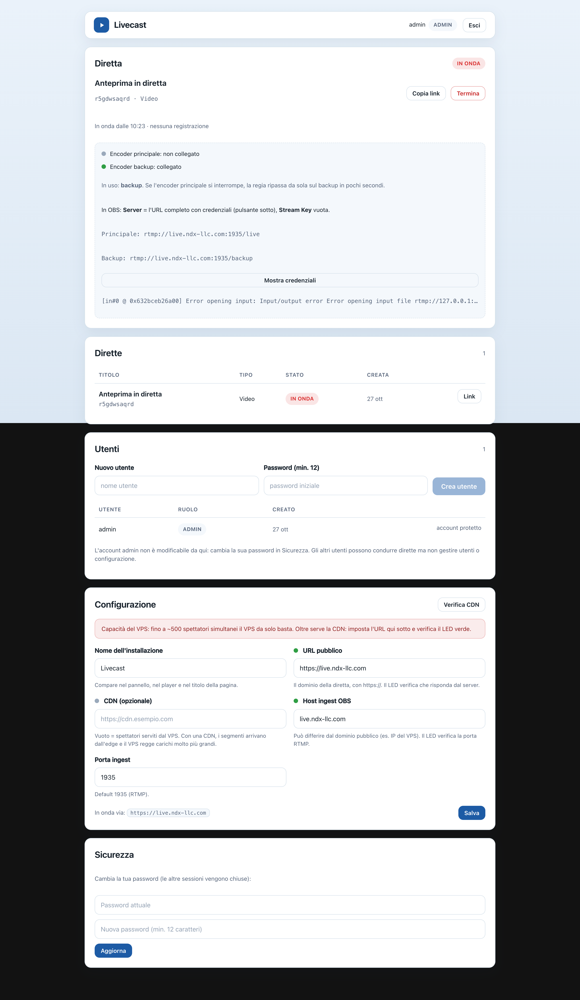

Livecast
Come configurare una diretta, in modo semplice.
Il flusso, semplificato:
📹 OBS
l'encoder
→
🖥️ VPS Livecast
trasforma il video
→
📱 Link pubblico
play / pausa
→
👥 Spettatori
→
☁️ CDN
oltre ~500 spettatori
Il software è libero (MIT) e può essere rinominato: nome, colori e immagini si cambiano dal pannello, senza
toccare il codice.
Guida rapida · versione 1.0 · https://github.com/sdagostino777/livecast
1. Cosa ti serve
-
OBS Studio su un computer (Windows, macOS, Linux) — è il programma che invia il video. Gratuito,
obsproject.com.
-
Un VPS con Ubuntu (anche 4 GB di RAM bastano per una diretta) e un dominio con un record DNS
A che punta al VPS.
- Il repository Livecast e 5 minuti per l'installazione iniziale.
Installazione (una volta sola, da terminale)
git clone https://github.com/sdagostino777/livecast.git
cd livecast && cp .deploy.env.example .deploy.env
Scrivi dentro .deploy.env l'indirizzo del tuo server, poi:
APP_DOMAIN=live.tuodominio.it bash infra/scripts/deploy.sh --provision
Lo script installa tutto: server video (MediaMTX), encoder (FFmpeg), i servizi che riavviano da soli dopo un
guasto, nginx, il certificato HTTPS gratuito e l'utente admin. Alla fine stampa la password di admin:
conservala in un posto sicuro.
Dopo l'installazione apri https://live.tuodominio.it/admin, accedi con
admin e cambia subito la password (ingranaggio → Sicurezza).
2. Primo accesso e creazione della diretta
Apri il link del pannello, inserisci utente e password. In alto a destra trovi l'ingranaggio (impostazioni) e
il tuo avatar con Esci.

1. Schermata di accesso.
Nel riquadro Diretta scrivi il titolo — per esempio Congresso Regionale o Evento
semestrale — scegli Video o Solo audio e premi Crea e vai in onda.

2. Pannello: creazione e stato della diretta, con i LED di collegamento.
3. Impostazioni (l'ingranaggio)
Con l'ingranaggio (in alto a destra) si apre la pagina impostazioni: Aspetto (tema chiaro, scuro o
sistema), Evento (posta l'immagine che gli spettatori vedono prima di premere play e l'icona
quadrata), Sicurezza (la tua password) e Utenti (solo per l'admin).

2b. Impostazioni: tema, immagine evento, sicurezza, utenti.
3. Andare in onda con OBS
Nel pannello premi Mostra credenziali: copia l'URL completo del server. In OBS →
Impostazioni → Trasmissione:
OBS Studio — Impostazioni → Trasmissione
Servizio
Personalizzato…
Server
rtmp://live.tuodominio.it:1935/live?user=publisher&pass=••••••
Chiave stream
(vuota)
Premi Avvia trasmissione in OBS: in pochi secondi il pannello passa a In onda. Copia il link
della diretta e condividilo. Gli spettatori vedono il poster e il pulsante play: da lì solo play e pausa.

4. Prima del play: il poster dell'evento e il pulsante play.
4. Cosa vede lo spettatore
Durante la diretta: play e pausa, il badge LIVE e il titolo. Niente altro — ogni comando in più è
un'occasione di errore su un telefono in mezzo a una folla.

5. Il player: solo play e pausa, come deve essere.

6. Una diretta «Solo audio»: stessa semplicità, con la card audio.
5. Spettatori, CDN e imprevisti
Quanti spettatori regge il VPS? Fino a ~500 simultanei basta il VPS da solo. Oltre serve una
CDN: nel pannello → Configurazione inserisci l'URL della CDN e controlla che il LED accanto
diventi verde. Con la CDN gli spettatori caricano i
video dall'edge e il VPS resta leggero.

5. LED verdi = collegamenti attivi. «In uso: backup» = il secondo encoder è subentrato.
Imprevisti: cosa succede
-
OBS si disconnette → la regia riparte da sola in pochi secondi; quando OBS si riconnette il video
torna.
-
L'encoder principale muore → se hai un secondo encoder collegato all'URL di backup, il pannello
mostra «In uso: backup» e la diretta continua.
-
Il server si guasta → nessun software sul server può salvarlo: serve un secondo VPS di riserva con i
dati (la cartella DATA_DIR) e il DNS reindirizzato. È il piano di emergenza da
preparare per eventi importanti.
Dove trovare il resto
README (inglese) · docs/RUNBOOK.md (operatività, CDN, soccorso) · docs/CDN.md (Bunny CDN passo
passo) · docs/guides/guide-en.pdf (questa guida in inglese).